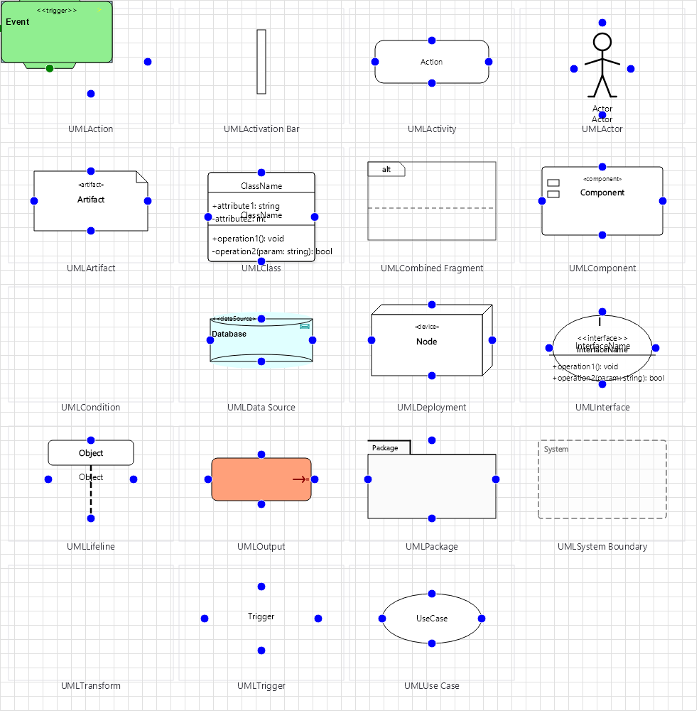

UML Diagram Family
UML diagrams with 17 node types covering class, interface, use case, sequence, activity, and deployment views.

Overview
Base Control: UMLControl : MaterialControl
Namespace: Beep.Skia.UML
The UMLControl is the root control for this diagram family. It inherits MaterialControl and provides shared port management, styling, and template methods for all nodes in the family.
This family contains 13 node types.
Node Types
| Node Class | Shape | Description |
|---|---|---|
UMLClass | 3-section rectangle | Class with name, properties, and methods compartments. |
UMLInterface | Rectangle with < | Interface with stereotype and method signatures. |
UMLActor | Stick figure | Use case actor (user/role/system). |
UMLLifeline | Dashed vertical line | Sequence diagram lifeline for object/actor. |
UMLAssociation | Solid line | Association relationship between classes. |
UMLInheritance | Hollow triangle arrow | Inheritance/generalization relationship. |
UMLMessage | Arrow line | Sequence diagram message between lifelines. |
UMLActionNode | Rounded rectangle | Activity diagram action step. |
UMLConditionNode | Diamond | Activity diagram decision/branch. |
UMLDataSourceNode | Database icon | Data source in deployment/component diagram. |
UMLTransformNode | Gear | Transform node in component diagram. |
UMLOutputNode | Output icon | Output/sink node. |
UMLTriggerNode | Event icon | Trigger/event source for activity. |
UMLClass
Class with name, properties, and methods compartments.
| Shape | 3-section rectangle |
|---|---|
| Input Ports | 2+ (sides) |
| Output Ports | 2+ (sides) |
UMLInterface
Interface with stereotype and method signatures.
| Shape | Rectangle with < |
|---|---|
| Input Ports | 2+ |
| Output Ports | 2+ |
UMLActor
Use case actor (user/role/system).
| Shape | Stick figure |
|---|---|
| Input Ports | 1 |
| Output Ports | 1 |
UMLLifeline
Sequence diagram lifeline for object/actor.
| Shape | Dashed vertical line |
|---|---|
| Input Ports | 0 |
| Output Ports | 1+ |
UMLAssociation
Association relationship between classes.
| Shape | Solid line |
|---|---|
| Input Ports | 0 |
| Output Ports | 0 |
UMLInheritance
Inheritance/generalization relationship.
| Shape | Hollow triangle arrow |
|---|---|
| Input Ports | 0 |
| Output Ports | 0 |
UMLMessage
Sequence diagram message between lifelines.
| Shape | Arrow line |
|---|---|
| Input Ports | 0 |
| Output Ports | 0 |
UMLActionNode
Activity diagram action step.
| Shape | Rounded rectangle |
|---|---|
| Input Ports | 1 |
| Output Ports | 1 |
UMLConditionNode
Activity diagram decision/branch.
| Shape | Diamond |
|---|---|
| Input Ports | 1 |
| Output Ports | 2+ |
UMLDataSourceNode
Data source in deployment/component diagram.
| Shape | Database icon |
|---|---|
| Input Ports | 1 |
| Output Ports | 1 |
UMLTransformNode
Transform node in component diagram.
| Shape | Gear |
|---|---|
| Input Ports | 1 |
| Output Ports | 1 |
UMLOutputNode
Output/sink node.
| Shape | Output icon |
|---|---|
| Input Ports | 1 |
| Output Ports | 0-1 |
UMLTriggerNode
Trigger/event source for activity.
| Shape | Event icon |
|---|---|
| Input Ports | 0 |
| Output Ports | 1 |
Connection Points
Every node in this family exposes connection points (ports) for linking to other nodes. Port positions are computed lazily by LayoutPorts(), which runs when MarkPortsDirty() flags the layout as stale after a move or resize.
| Node Class | Input Ports | Output Ports | Extra |
|---|---|---|---|
UMLClass | 2+ (sides) | 2+ (sides) | — |
UMLInterface | 2+ | 2+ | — |
UMLActor | 1 | 1 | — |
UMLLifeline | 0 | 1+ | — |
UMLAssociation | 0 | 0 | — |
UMLInheritance | 0 | 0 | — |
UMLMessage | 0 | 0 | — |
UMLActionNode | 1 | 1 | — |
UMLConditionNode | 1 | 2+ | — |
UMLDataSourceNode | 1 | 1 | — |
UMLTransformNode | 1 | 1 | — |
UMLOutputNode | 1 | 0-1 | — |
UMLTriggerNode | 0 | 1 | — |
Connection Conventions
When building diagrams with this family, follow these conventions:
- Class diagram: inheritance uses hollow triangle, association uses open arrow
- Sequence diagram: lifelines with activation bars, messages as horizontal arrows
- Activity diagram: action nodes connected by control flow arrows
Usage Example
Complete example showing creation, node placement, and connection:
C# Example
var uml = new UMLControl
{
X = 50, Y = 50,
Width = 700, Height = 500
};
drawingManager.AddComponent(uml);
var cls = new UMLClass
{
X = 100, Y = 80,
ClassName = "Order",
Width = 200
};
cls.Attributes.Add("- Id : int");
cls.Attributes.Add("- Date : DateTime");
cls.Operations.Add("+ CalculateTotal() : decimal");
drawingManager.AddComponent(cls);
var iface = new UMLInterface
{
X = 400, Y = 80,
InterfaceName = "IOrderService",
Width = 200
};
drawingManager.AddComponent(iface);
drawingManager.ConnectComponents(cls, iface);